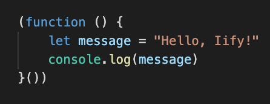

Closures and IIFEs
Immediately-Invoked Function Expression:

How an IIFE Works
- Define and excecute statements without cluttering the global namespace
- Return values when needed (that's a closure)
- Hide your privates
A closure is a way of giving access to a function's scope, from a function inside of it.
Write a Library
IIFEs are great for self-contained libraries
- They run right away
- They don't clutter the namespace
- They protect what they want
Code Example
This text has the class name "hover-me".
This text is orginally blue.
This text does not.